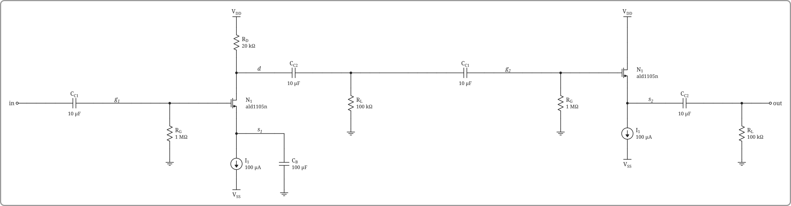
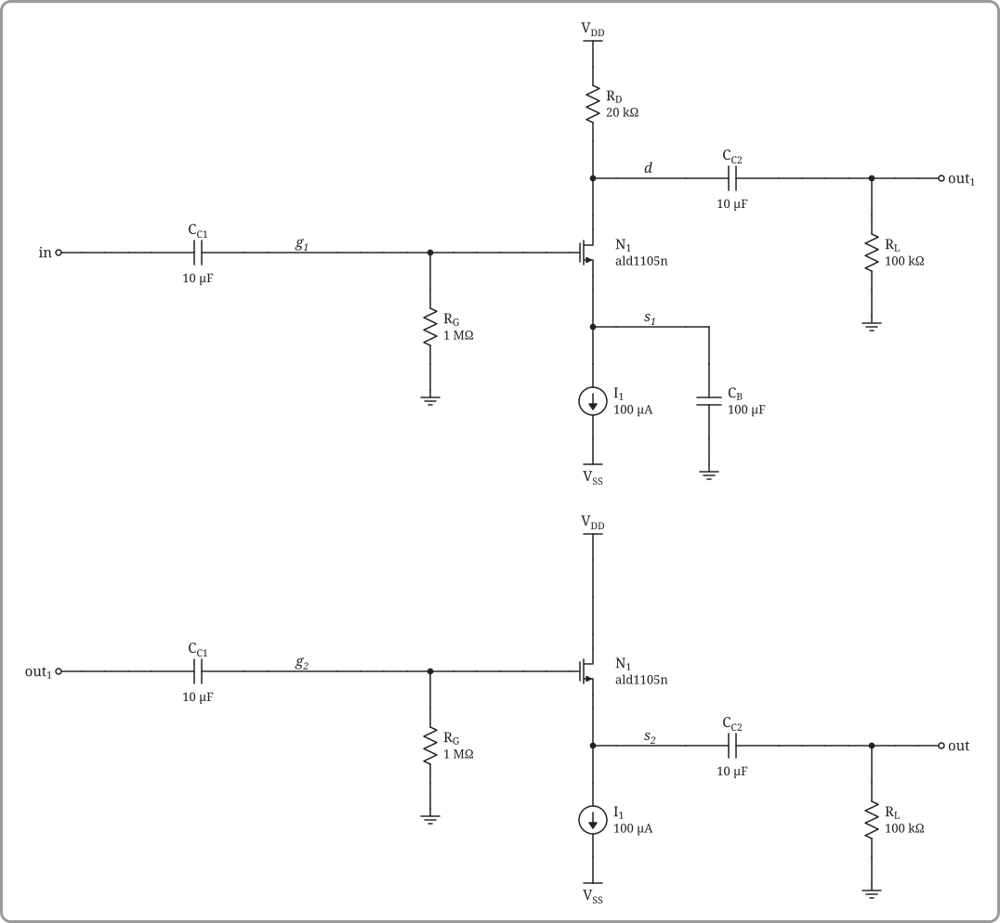

Spacing and layout
xscale and yscale
xscale and yscale spread a drawing out (or pull it in) horizontally and vertically without changing the size of symbols or text; wires and leads get longer or shorter. They work as keywords of ascii_schematic, tikz_schematic and Schematic, and Schematic(s; kw...) copies a finished drawing with new settings:
using SchematicSVG
stage = ascii_schematic("""
vdd
|
RD
|
*---out
|
in----|N1
|
gnd
""")
Schematic(stage; xscale=1.6) # wider rotate(90.0)"><line x1="0" y1="0" x2="20.0" y2="0"/><line x1="60.0" y1="0" x2="80.0" y2="0"/><g transform="translate(40.0,0)"><polyline points="-20,0 -16.7,-7 -10,7 -3.3,-7 3.3,7 10,-7 16.7,7 20,0"/></g></g><polyline points="560.0,160.0 600.0,160.0"/><circle cx="600.0" cy="160.0" r="3" fill="white"/><polyline points="200.0,240.0 160.0,240.0"/><circle cx="160.0" cy="240.0" r="3" fill="white"/><g transform="translate(440.0,240.0) scale(1.0,1.0)" stroke-width="1.5"><path d="M-40.0,0 H-14 M-14,-10 V10 M-10,-13 V13 M-10,-8 H0 V-25.0 M-10,8 H0 V25.0"/><polygon points="-2.0,8.0 -7.0,10.5 -7.0,5.5" fill="currentColor"/></g><polyline points="400.0,240.0 320.0,240.0"/><polyline points="440.0,215.0 440.0,200.0"/><polyline points="440.0,265.0 440.0,280.0"/><polyline points="440.0,280.0 440.0,308.0"/><path d="M440.0,308.0 v8 M430.0,316.0 h20 M434.0,320.0 h12 M438.0,324.0 h4"/><circle cx="440.0" cy="160.0" r="2.6" fill="currentColor"/><text x="440.0" y="3.0" text-anchor="middle" dominant-baseline="auto" stroke="none" fill="currentColor">V<tspan dy="4" font-size="10.5">DD</tspan></text><text x="454.0" y="80.0" text-anchor="start" dominant-baseline="middle" stroke="none" fill="currentColor">R<tspan dy="4" font-size="10.5">D</tspan></text><text x="607.0" y="160.0" text-anchor="start" dominant-baseline="middle" stroke="none" fill="currentColor">out</text><text x="153.0" y="240.0" text-anchor="end" dominant-baseline="middle" stroke="none" fill="currentColor">in</text><text x="464.0" y="240.0" text-anchor="start" dominant-baseline="middle" stroke="none" fill="currentColor">N<tspan dy="4" font-size="10.5">1</tspan></text></g></svg>)
Schematic(stage; xscale=0.7, yscale=0.8) # tighter rotate(90.0)"><line x1="0" y1="0" x2="12.0" y2="0"/><line x1="52.0" y1="0" x2="64.0" y2="0"/><g transform="translate(32.0,0)"><polyline points="-20,0 -16.7,-7 -10,7 -3.3,-7 3.3,7 10,-7 16.7,7 20,0"/></g></g><polyline points="245.0,128.0 262.5,128.0"/><circle cx="262.5" cy="128.0" r="3" fill="white"/><polyline points="87.5,192.0 70.0,192.0"/><circle cx="70.0" cy="192.0" r="3" fill="white"/><g transform="translate(192.5,192.0) scale(1.0,1.0)" stroke-width="1.5"><path d="M-17.5,0 H-14 M-14,-10 V10 M-10,-13 V13 M-10,-8 H0 V-20.0 M-10,8 H0 V20.0"/><polygon points="-2.0,8.0 -7.0,10.5 -7.0,5.5" fill="currentColor"/></g><polyline points="175.0,192.0 140.0,192.0"/><polyline points="192.5,172.0 192.5,160.0"/><polyline points="192.5,212.0 192.5,224.0"/><polyline points="192.5,224.0 192.5,246.4"/><path d="M192.5,246.4 v8 M182.5,254.4 h20 M186.5,258.4 h12 M190.5,262.4 h4"/><circle cx="192.5" cy="128.0" r="2.6" fill="currentColor"/><text x="192.5" y="0.6" text-anchor="middle" dominant-baseline="auto" stroke="none" fill="currentColor">V<tspan dy="4" font-size="10.5">DD</tspan></text><text x="206.5" y="64.0" text-anchor="start" dominant-baseline="middle" stroke="none" fill="currentColor">R<tspan dy="4" font-size="10.5">D</tspan></text><text x="269.5" y="128.0" text-anchor="start" dominant-baseline="middle" stroke="none" fill="currentColor">out</text><text x="63.0" y="192.0" text-anchor="end" dominant-baseline="middle" stroke="none" fill="currentColor">in</text><text x="216.5" y="192.0" text-anchor="start" dominant-baseline="middle" stroke="none" fill="currentColor">N<tspan dy="4" font-size="10.5">1</tspan></text></g></svg>)
A CircuiTikZ environment's own [xscale=…, yscale=…] options do the same. scale is different: it sets the pixels per unit, so it also resizes transistors and op-amps.
When a drawing is pulled in, a symbol's leads get shorter but never run into the symbol: a PMOS gate wire stops outside the bubble, MOSFET and BJT leads stop at the bars, and an op-amp keeps its inputs where they are and slides right so its input leads keep some length. Resistors, capacitors, sources and other two-terminal symbols shrink when their ends are closer than the symbol is long, keeping a short lead at each end. Very small values (below about 0.5) can still crowd neighbouring parts and labels.
Border
Every figure has a thick gray border with rounded corners, so a drawing that runs past the edge of a notebook window is easy to spot. Turn it off with border=false, as a keyword of ascii_schematic, tikz_schematic or Schematic, or afterwards with Schematic(s; border=false).
Combining drawings
layout(parts...) places drawings side by side (direction=:row) or stacked (direction=:column) in one figure. Parts are ASCII drawings or Schematics, such as stages already annotated with their own values, and the result is an ordinary Schematic: it can be annotated, netlisted, made into a subcircuit or laid out again. [s1 s2] and [s1; s2] do the same for Schematics.
Two amplifier stages, each with its own values:
cs_drawing = """
vdd
|
RD
|
+-@d-CC2----+--out
| |
in----CC1--@g----+-----|N1 RL
| | |
RG +-@s-+ gnd
| | |
gnd I1 CB
| |
vss gnd
"""
sf_drawing = """
vdd
|
|
|
in----CC1--@g----+-----|N1
| |
RG +-@s-CC2----+--out
| | |
gnd I1 RL
| |
vss gnd
"""
fet = (model="ald1105n", W=20e-6, L=10e-6)
cs = ascii_schematic(cs_drawing; elements=Dict("RD" => 20e3, "RG" => 1e6, "RL" => 1e5,
"CC1" => 1e-5, "CC2" => 1e-5, "CB" => 1e-4, "I1" => 1e-4, "N1" => fet))
sf = ascii_schematic(sf_drawing; elements=Dict("RG" => 1e6, "RL" => 1e5,
"CC1" => 1e-5, "CC2" => 1e-5, "I1" => 1e-4, "N1" => fet))Parts join at their terminals in two ways, which can be mixed. connect draws the connection: the second part moves so its terminal lines up with the first one's, and a wire replaces both terminal circles.
two_stage = layout(cs, sf; connect=[(1, "out") => (2, "in")])
share connects by name only: both terminals stay drawn and take one name, so their labels match. This suits a column, or parts that aren't neighbours.
layout(cs, sf; direction=:column, share=[(1, "out") => (2, "in")])
The result is one circuit. Its terminals are the ones left over, in and out:
print(spice_subcircuit(two_stage; name="cs_sf", rename=Dict("vdd" => "vdd!", "vss" => "vss!"))).subckt cs_sf in out
RD vdd! d 20000
CC2_1 d out_1 1.0e-5
CC1_1 in g_1 1.0e-5
MN1_1 d g_1 s_1 s_1 ald1105n W=2.0e-5 L=1.0e-5
RL_1 out_1 0 100000
RG_1 g_1 0 1000000
I1_1 s_1 vss! DC 0.0001
CB s_1 0 0.0001
CC1_2 out_1 g_2 1.0e-5
MN1_2 vdd! g_2 s_2 s_2 ald1105n W=2.0e-5 L=1.0e-5
RG_2 g_2 0 1000000
CC2_2 s_2 out 1.0e-5
I1_2 s_2 vss! DC 0.0001
RL_2 out 0 100000
.ends cs_sfNames
Supplies and ground are always common to all parts. Any other element or node name used in more than one part gets the part's number (CC1 → CC1_1, CC1_2; @g → g_1, g_2), so separate parts stay separate, and terminal and node labels follow; element labels in the drawing are left as they are. Names used in only one part (RD, CB, @d above) don't change. The joined node keeps the first terminal's name, numbered if that name is used elsewhere (out_1 above). share=["vb"] makes a node common to every part that has it.
Options
- A drawn connection needs neighbouring parts, and each neighbouring pair can have one;
sharejoins any parts. gap(circuit units, default 1.5) sets the spacing.alignlines up parts that aren't joined by a drawn connection::top(default),:centeror:bottomin a row;:left(default),:centeror:rightin a column.- Other keywords (
xscale,border, …) are settings of the result, which otherwise come from the first part.